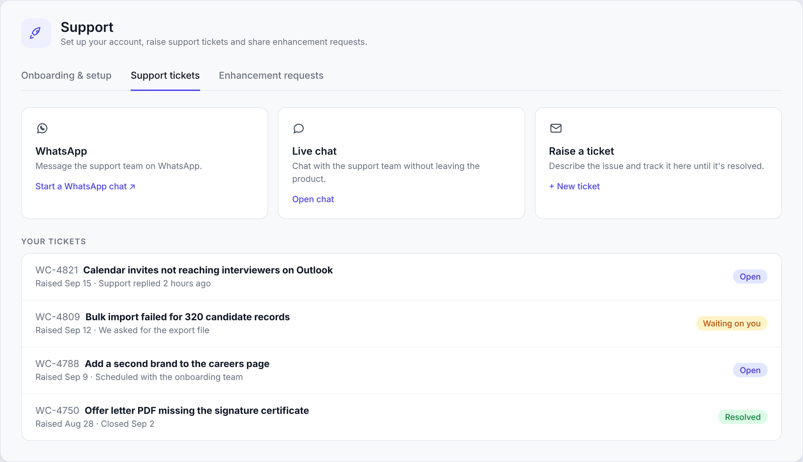
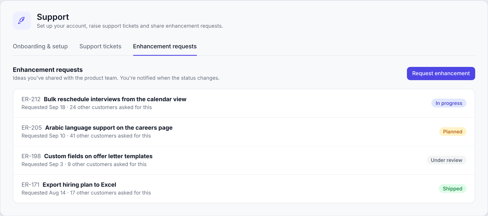

Problem
Setup depended on our team. After each training call, a new account waited for the next one to know what to do. Our activation data showed the cost:
4 daysmedian time from first login to first published job
1 in 4accounts took more than 24 days
36%of accounts hadn't published a job
Support happened everywhere and was recorded nowhere. Customers reached us on email, WhatsApp and phone. Issues got resolved, but there was no record of what an account had raised, no way to follow up when something needed a fix, and no view of which problems kept coming back.
Feature requests disappeared. A customer asked for something, someone said we'd look into it, and the customer rarely heard back.
Goal
A new account can publish its first job without waiting for a call, and every issue or request is recorded in one place, with a status the customer can see.
Options and decision
What we shipped
1. Onboarding & setup
- A checklist for each role. Admins get the full setup. Hiring managers get only the steps relevant to them.
- Essentials first. The first steps cover what's needed to publish a job. Scorecards and offer templates follow.
- Help for every step: a help article, and a short video where it helps. I updated outdated articles before release, since the checklist is only as good as the help behind it.
- Shared work. Each step can be assigned to a teammate, done directly, or started with Whitecarrot AI.
2. Support tickets
- The same channels, now on record. Customers still message us on WhatsApp or live chat, and can also raise a ticket from inside the product.
- A status for every query: Open, Waiting on you, or Resolved. Both sides see where it stands, and the team can see which problems repeat.

3. Enhancement requests
- Requests in the product. When a customer needs something the product doesn't do yet, they request it where they work.
- Automatic updates. When a request moves to Planned, In progress or Shipped, the customer is notified, including when the answer is no.
- Demand is visible. Each request shows how many other customers asked for the same thing, which feeds directly into prioritisation.

Impact
Every request on recordEach account now has a history of what it raised and how it was resolved, which the team checks before renewal calls.
Customers see progressWhen something they asked for ships, they hear about it automatically. Customers see that their feedback leads somewhere.
Faster time to valueAccounts set themselves up without waiting for the next call, so they reach their first published job sooner.
What's next
- Checklist steps that complete automatically once the setup is detected.
- Use ticket trends to find the features that need clearer help or a product fix.
Learnings
- Documenting the onboarding exposed the steps that only worked because a person was there to help. Those became the scope.
- Collecting feature requests is easy. Closing the loop with customers is what builds trust.